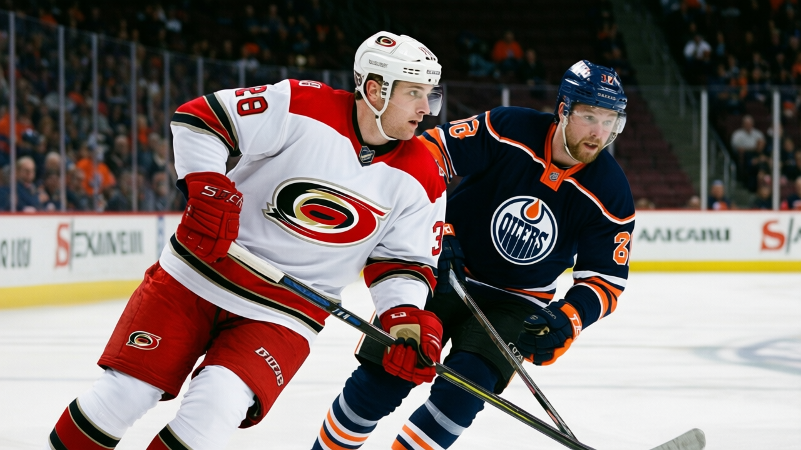

Notes from the East: Carolina's division lead is built on a 30-game schedule and seven overtime games
The Hurricanes beat Edmonton 6-0 to reach 41 points and first in the Southeast on the league's busiest schedule
 Ray CallumSenior correspondent · Home Ice Network
Ray CallumSenior correspondent · Home Ice Network
 Carolina Hurricanes beat
Carolina Hurricanes beat  Edmonton Oilers 6-0 on Saturday, outshooting the Oilers 26-19, and moved to 41 points, first in the Southeast. Edmonton has lost four straight.
Edmonton Oilers 6-0 on Saturday, outshooting the Oilers 26-19, and moved to 41 points, first in the Southeast. Edmonton has lost four straight.
Carolina Hurricanes have played 30 games, tied with  Dallas Stars,
Dallas Stars,  Mighty Ducks of Anaheim and
Mighty Ducks of Anaheim and  Phoenix Coyotes for the most in the league. 7 of them have gone to overtime, the most of any club. That gives the club 12 regulation wins, 6 regulation losses, 7 games past sixty minutes, and 41 points, a lead in a division where
Phoenix Coyotes for the most in the league. 7 of them have gone to overtime, the most of any club. That gives the club 12 regulation wins, 6 regulation losses, 7 games past sixty minutes, and 41 points, a lead in a division where  Tampa Bay Lightning sit at 38. Only
Tampa Bay Lightning sit at 38. Only  Toronto Maple Leafs at 48,
Toronto Maple Leafs at 48,  Colorado Avalanche at 47 and
Colorado Avalanche at 47 and  New York Rangers at 44 sit on more points.
New York Rangers at 44 sit on more points.
| Southeast | GP | W | L | OTL | Pts |
|---|---|---|---|---|---|
| Carolina Hurricanes | 30 | 12 | 6 | 7 | 41 |
| Tampa Bay Lightning | 29 | 14 | 9 | 2 | 38 |
 Washington Capitals Washington Capitals | 29 | 13 | 10 | 4 | 34 |
 Florida Panthers Florida Panthers | 29 | 11 | 15 | 1 | 27 |
 Atlanta Thrashers Atlanta Thrashers | 27 | 5 | 17 | 2 | 18 |
Tampa Bay have 14 regulation wins, more than Carolina have in all, and still trail in the standings. The extra-time points are the difference between leading the division and sitting third, where Washington sit at 34.
The roster churns to support the pace.  Petr Sykora82,
Petr Sykora82,  Radim Vrbata79,
Radim Vrbata79,  Sandis Ozolinsh86 and
Sandis Ozolinsh86 and  Steve Rucchin80 all moved into new slots this week.
Steve Rucchin80 all moved into new slots this week.  Jeff Heerema75 came up from the minors. Corey Hirsch75 took the backup job in goal as
Jeff Heerema75 came up from the minors. Corey Hirsch75 took the backup job in goal as  Arturs Irbe77 left the crease, and
Arturs Irbe77 left the crease, and  Kevin Weekes90 has started 25 of the 30 games, 83%.
Kevin Weekes90 has started 25 of the 30 games, 83%.
The cost shows on the injury list.  Rod Brind'Amour83 is out with a back problem until 2005-01-22,
Rod Brind'Amour83 is out with a back problem until 2005-01-22,  Sean Hill79 with a hip until 2005-01-16, and
Sean Hill79 with a hip until 2005-01-16, and  Josef Vasicek80 with a leg due back 2004-12-15.
Josef Vasicek80 with a leg due back 2004-12-15.
Seven extra-time games are seven points a 12-win club would not otherwise hold, and they carry the league's busiest schedule.